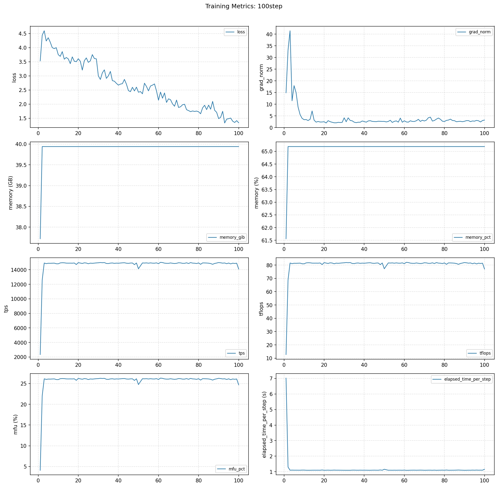

Qwen3-0.6B 单机样例（云开发平台）
本文档给出 torchtitan_npu/models/qwen3 在云开发平台上的最小可运行样例，默认使用 qwen3_0.6b.toml 进行单机场景训练。
1. 环境准备
选择云平台中的 cann_9.0.0-beta.2-py3.11-A3-arm-20260422 镜像创建环境即可。
说明：镜像名称中的日期后缀（如
20260422）会随云平台版本迭代更新，选择时请确认满足以下两个关键条件即可： - Python 版本：py3.11- 架构：A3-arm
1.1 卸载与安装指定版本（需管理员权限）
执行前需要先卸载云平台自带的 torch 和 torch_npu，卸载需要管理员权限。
卸载（管理员权限）：sudo pip uninstall -y torch torch_npu
进入仓库根目录后安装依赖：
pip install -r requirements.txt
2. 准备 Ascend 环境变量
本样例基于云平台环境：云平台默认是 2 die，需要按云平台场景调整 scripts/run_train.sh 里的 CANN 包路径：
- CANN 包路径更新：当前云环境中 CANN 包路径为
/home/developer/Ascend/ascend-toolkit/set_env.sh，需将脚本中对应的source行修改为该路径。 - 关闭 nnal 包：当前样例不依赖
nnal包，请将脚本中的source /usr/local/Ascend/nnal/atb/set_env.sh注释掉，避免因路径不存在导致启动失败。
关于卡数（
NGPU）与训练配置（CONFIG_FILE），无需修改脚本，可以在拉起命令中通过环境变量直接覆盖，详见第 4 节。
3. 模型权重准备
本样例使用的Qwen3-0.6B模型权重准备方法如下：
# 从魔塔社区下载模型的基础文件，存放在当前目录的 ./Qwen3-0.6B 目录下
mkdir ./Qwen3-0.6B
modelscope download --model Qwen/Qwen3-0.6B --local_dir ./Qwen3-0.6B
如果目录改动需要同步修改 qwen3_0.6b.toml 中 model.hf_assets_path 和 checkpoint.initial_load_path。
4. 使用默认配置启动（qwen3_0.6b）
scripts/run_train.sh 支持通过环境变量覆盖默认参数，云平台 2 die 场景下可在拉起命令中直接指定 NGPU 与 CONFIG_FILE，无需修改脚本：
NGPU=2 CONFIG_FILE=./torchtitan_npu/models/qwen3/train_configs/qwen3_0.6b.toml bash scripts/run_train.sh
环境变量说明：
- NGPU=2：覆盖脚本中 NGPU=${NGPU:-"8"} 的默认值，匹配云平台 2 die 场景。
- CONFIG_FILE=...：指定本样例的 Qwen3-0.6B 训练配置，覆盖脚本中默认的 DeepSeek 配置。
其余默认值（无需指定）：
- 默认训练入口：torchtitan_npu.entry。
- 默认数据集：./tests/assets/c4_test（在所选 toml 中配置）。
- 默认输出目录：./outputs（在所选 toml 中配置）。
5. 常见问题
source .../set_env.sh失败：检查 Ascend Toolkit 安装路径并修正脚本或手动source。- 启动后找不到数据集：确认
qwen3_0.6b.toml中training.dataset_path路径可访问。 - 卡数不符：确认
NGPU与云开发平台分配的 NPU 资源一致。 - 关于
./outputs/checkpoint目录：训练默认会从该目录加载已有 checkpoint 续训，因此请按场景选择是否清理： - 从头开始训练（如调参、复现 loss 曲线、对比实验）：删除
./outputs/checkpoint整个目录，否则会从上一次保存的步数继续，导致起始 step 不为 0。 - 续训 / 断点恢复（如训练中途异常退出、需要在原训练基础上继续）：保留该目录，重新拉起后会自动从最近一次 checkpoint 恢复。
6. 训练效果图
